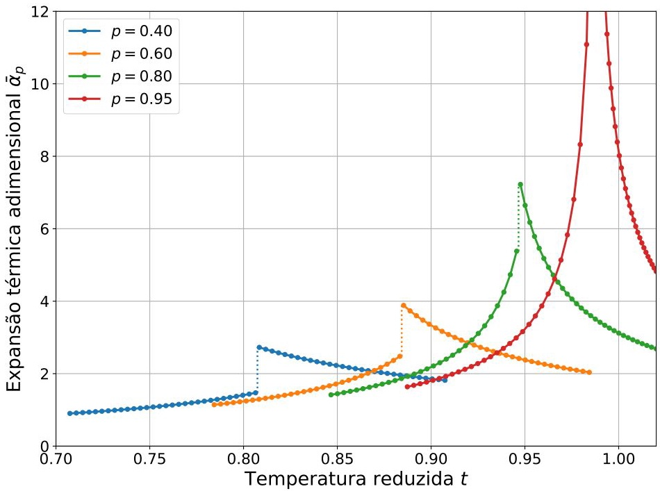

🌡️ Definição e Forma Reduzida
O coeficiente de expansão térmica isobárica quantifica a variação relativa do volume com a temperatura.
Em variáveis reduzidas, utilizando a derivada implícita da equação de estado:
Onde o denominador \( D \) é o mesmo observado na compressibilidade isotérmica.
📉 Análise Gráfica

Figura 16: Expansão térmica \(\bar{\alpha}_p\) em função de \(t\) para pressões \(p < 1\).
Observa-se que a fase líquida apresenta baixa expansividade, enquanto a fase gasosa expande-se acentuadamente.
⚡ Flutuações e Divergência
O comportamento de \(\bar{\alpha}_p\) sinaliza a proximidade de uma transição de fase ou instabilidade:
- Divergência Espinodal: Quando \( D \to 0 \), a expansão térmica diverge ao infinito.
- Ponto Crítico: Em \( t=1, p=1 \), as flutuações de volume tornam-se macroscópicas.
- Descontinuidade: O salto em \( t_{eq}(p) \) reflete a mudança estrutural entre líquido e gás.